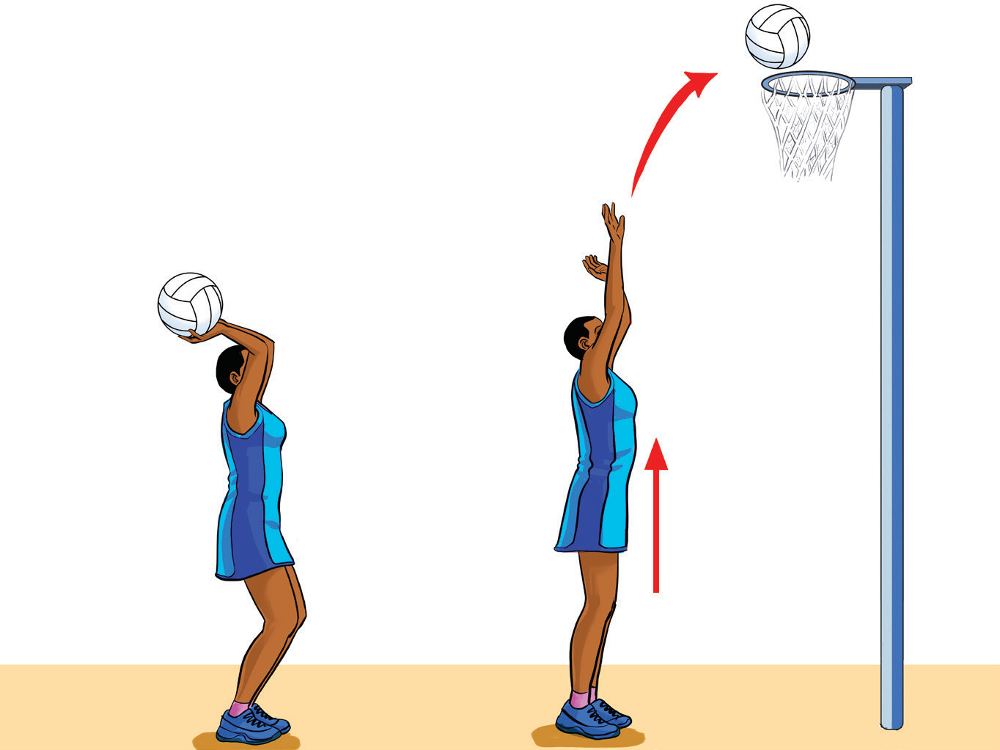

Set shot
A stable, controlled shot aimed for accuracy, usually taken with both hands. This technique involves standing still, focusing on the target, and shooting in a smooth, controlled motion to ensure precision and consistency. To practice the set shot, follow these steps:
(i)
Stand with feet shoulder-width apart and knees slightly bent for balance and stability;
(ii)
Hold the ball with both hands in front of you, ensuring your shooting hand is under the ball and your non-shooting hand is on the side;
(iii)
Focus on the target, aiming for the centre of the goal or the highest point of the net;
(iv)
Push the ball upwards with a smooth motion, using your legs for power and extending your arms fully. as shown in Figure 1.16; and
(v)
Follow through by flicking your wrist towards the target, ensuring your shooting hand finishes in a relaxed position, pointing towards the hoop.

a
b
Figure 1.16: Set shot execution
Jump shot
A jump shot is taken while jumping, which helps to avoid defenders and increases the shooting angle. By leaping as they shoot, players can create space between themselves and the defenders, making the shot more difficult to block, and giving them a higher shooting trajectory. To practice the jump shot, follow these steps:
SPORTS STUDIES FORM TWO.indd 179/17/25 9:54 AM